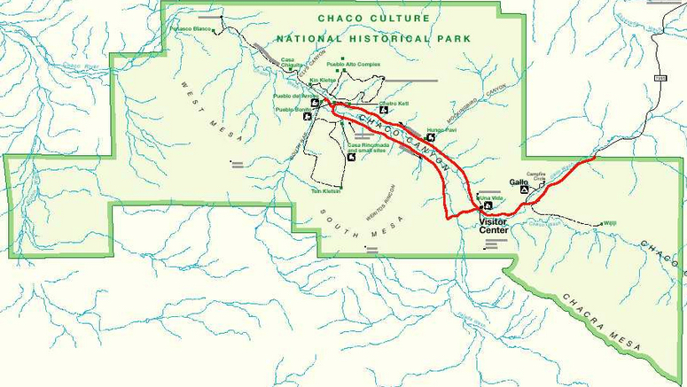

Chaco Canyon Index of Hikes
Chaco Canyon, located in a desolate area of badlands in Northwest New Mexico, is a world-reknowned archeological site, still connected with modern pueblo cultures. Archeologists have now gathered enough information to better understand its historical and astrological significance, though a large number of questions remain. There have been numerous books written about Chaco Canyon, and some interesting DVD's which are well suited to the curious visitor. One of the better DVD's describing how numerous, very unique astronomical connections were discovered at Fajada Butte, is The Mystery of Chaco Canyon, narrated by Robert Redford.
Chaco is rather remote, and requires significant travel to see it. It is more of an interesting archeological site than a place to hike, but most of the "pueblos" at Chaco do require short loop walks of 1/4 to 1/2 mile, with longer loop hikes of over 4 miles (for the Pueblo Alto Loop), and about 3.6 miles (for the Tsin Kletsin loop). There is a trail of 7.4 miles, out and back, to reach Penasco Blanco, and just before approaching the Visitor Center, there is a trail that is about 3 miles (out and back) at Wijiji, which ends at a location where some Chacoan Rock Art can be viewed. Access to the canyon is generally dirt road, and if travelling from US 550, the 21-mile road in starts with about 7 miles of pavement. Another 7-8 miles is well-maintained gravel, but at that point, county maintenance ends, and the remainder - up to the interior paved park road - can be very rough and slow at best. A campsite on the park premises provides perhaps the best way to see Chaco, as it is 2-1/2 hours from Corrales, one way, and an overnight stay would help allow time to visit the many sites.
The authors have not yet completed visits to all the sites. Nonetheless, the sites available in the park are listed below in a table. The sites not yet visited are identified by gray text. Links are provided to pages with some photos and a bit more information about the site. While there are many websites available, the National Park System provides a good starting point. Check out the NPS site.
Chaco Canyon public sites:
| Chaco Site | Trail Distance | Site Page |
|---|---|---|
| Una Vida | 0.75 mile | Una Vida Trail |
| Hungo Pavi | 0.25 mile | Hungo Pavi Site |
| Chetro Ketl | 0.5 mile | <Not Available> |
| Pueblo Bonito | 1 mile | Pueblo Bonito Site |
| Kin Kletso | 0.6 miles | Kin Kletso Site |
| Pueblo Alto | 5.7 miles | Pueblo Alto Loop |
| Casa Chiquita | 2 miles | <Not available> |
| Penasco Blanco | 7.4 miles | <Not available> |
| Pueblo del Arroyo | 0.1 miles | <Not available> |
| Tsin Kletsin/Casa Rinconada | 3.8 miles | <Not available> |